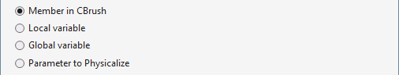

Create From Usage
Maintain your workflow by using symbols before defining them. From an unrecognized symbol, use the default shortcut Shift+Alt+C, or open the Quick Action and Refactoring menu (Shift+Alt+Q), to create a definition from the usage.
In the dialog that opens, tell Visual Assist what target to create. Creating works for many types of targets, including enums, variables, functions, and methods.

Learn more.